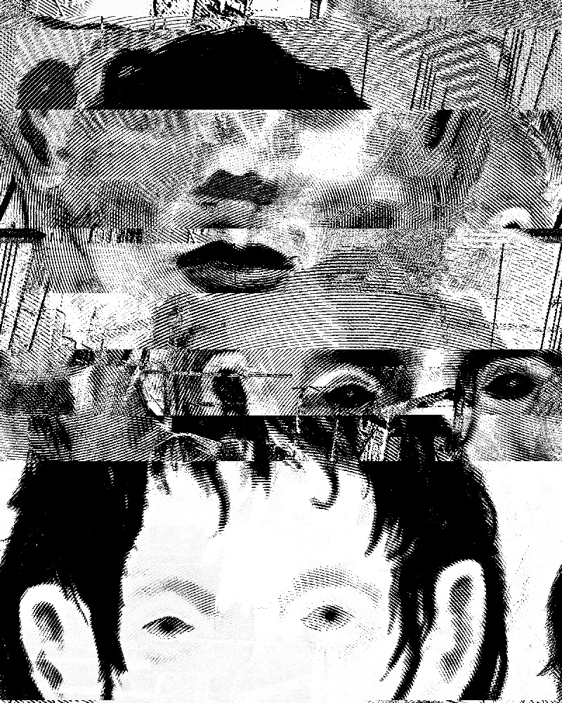

Stellt aus euren Experimenten eine Sammlung von Bildern zusammen. Betrachtet, was entstanden ist – manchmal sind es Details, die interessieren. Bearbeitet Material weiter, wenn ihr wollt, druckt es aus, schneidet es aus.
Sucht nach Nachbarschaften und Themen: Was verschwindet durch die Audacity-Kompression? Ist es das Gesicht? Was entsteht neu – eine Erscheinung im Himmel? Ordnet eure Sammlung in Gruppen und zeigt, was euch interessiert.

Lou Cosmo Pilleri, Workshop Loechrige Bilder